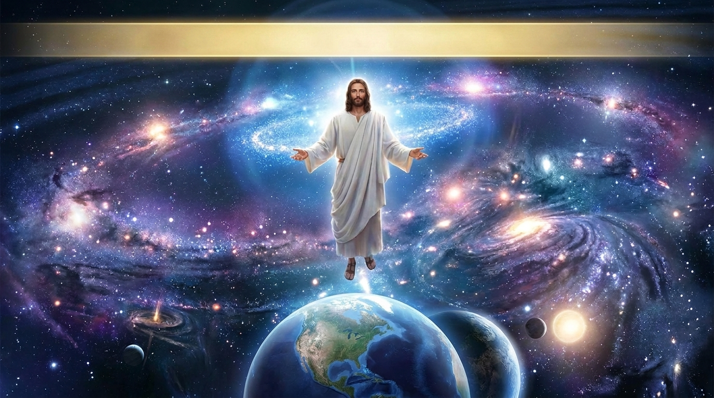

A Supremacia e a Suficiência de Cristo
A Carta aos Colossenses foi escrita por Paulo para uma igreja que ele não fundou pessoalmente, mas que estava sendo ameaçada por falsos ensinamentos. Esses mestres tentavam misturar o evangelho com filosofias pagãs, misticismo e rigoroso legalismo judaico, sugerindo que Cristo não era suficiente para a salvação e o crescimento espiritual. Em resposta, Paulo escreve um dos textos mais elevados da Bíblia sobre quem é Jesus, declarando que Ele é a imagem do Deus invisível, o criador e sustentador de todo o universo, e a cabeça da Igreja. Paulo deixa claro que, em Cristo, os cristãos já possuem toda a plenitude e não precisam de rituais ou filosofias humanas.
Ficha Técnica
- Autor: O apóstolo Paulo.
- Tema Principal: A supremacia e a suficiência absolutas de Jesus Cristo e o combate a falsas doutrinas.
- Versículo-Chave: "Pois nele habita corporalmente toda a plenitude da divindade, e, por estarem nele, que é o Cabeça de todo poder e autoridade, vocês receberam a plenitude." (Colossenses 2:9-10)
Estrutura
- A supremacia de Cristo na criação e na obra da redenção (Cap. 1)
- A suficiência de Cristo contra as falsas filosofias e o legalismo (Cap. 2)
- A nova vida em Cristo: abandonando o pecado e vivendo em amor (Cap. 3:1-17)
- Instruções para a família, o trabalho e saudações finais (Caps. 3:18-4:18)